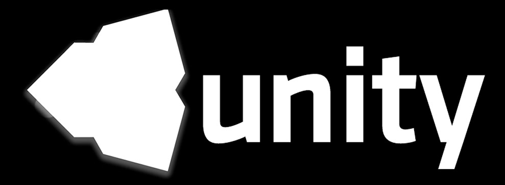

Billboard Reflection
2016-9-7
需要实现的效果如下图，在一个光滑的大理石平面上反射出物体的镜像：
一般来说类似这种水面反射的效果，会使用一个相对当前相机在平面另一边的一个镜面相机进行渲染到 RenderTexture，再投影到平面上的技术。这种方法好处是自由度很高，缺点是消耗也不小。而这里使用到方法，由于是针对一些特定情况设计的，所以应用场景就没那么广泛，当然消耗也会小很多。
从名称上就可以看出，被反射的物体只能是一个面片，当然是不是 Billboard 都可以，Billboard 也是面片嘛。这就是所谓的局限性了。如果使用得当可以得到非常好的效果，甚至可以用这种方法来模拟出面光源的效果：

这种方法的基本原理就是计算射线和平面的交点：
V : 视线向量
N : 法线向量
R : 反射向量
P : 反射向量于面片的交点

使用以下方程来表示平面：
\[ (P_{x}-P_{o}) \cdot P_{N} = 0 \]
$$$ P_{x} $$$ : 平面上任意一点
$$$ P_{o} $$$ : 平面上另一个点
$$$ P_{N} $$$ : 平面的法向量
对于一个平面来说，$$$ P_{x}-P_{o} $$$ 形成的向量与 $$$ P_{N} $$$ 向量永远垂直，所以点积总是 $$$ 0 $$$。
使用以下方程表示射线：
\[ R(t) = R_{o} + R_{D} * t \]
$$$ R_{o} $$$ : 射线的起点
$$$ R_{D} $$$ : 射线的方向
$$$ t $$$ : 射线在方向上经过的距离
由于射线和平面有交点（暂不考虑没有交点的情况，可以通过 $$$ P_{N} 和 R_{D} $$$ 判断出来），所以可以直接将射线方程代入平面方程：
\[\begin{align} (R_{o} + R_{D} * t - P_{o}) \cdot P_{N} &= 0 \\ { (P_{o} - R_{o}) \cdot P_{N} \over R_{D} \cdot P_{N} } &= t \end{align}\]
得到 $$$ t $$$ 之后，就可以将 $$$ t $$$ 代回射线方程，求出交点了。注意这个交点是在世界坐标下的，我们需要将其转换到要投影面片的模型坐标下，并转换成 uv 坐标，从要投影面片的纹理中采样。注意上式的分母，如果等于 0 就表示平面和射线没有交点。
关键部分的代码其实就是将以上的公式翻译成代码即可。这里提供一个小技巧，在实现着色器代码的时候总是会出现各种意想不到的问题，这时候就很难调试了，我是先在脚本中将所有的计算都实现了一边，并使用 Gizmos 将过程以及结果以辅助线的形式绘制出来，确保无误后再移植到 Shader 中的。这样的好处就是方便调试，有什么问题立刻能看出来。
脚本代码：
// Application code
material.SetVector("_PlanePos", plane.position);
material.SetVector("_PlaneN", plane.forward);
material.SetMatrix("_PlaneW2O", plane.worldToLocalMatrix);
着色器代码：
// Shader code
// fragment
float3 viewDir = normalize(IN.worldPos - _WorldSpaceCameraPos);
float3 worldNormal = normalize(IN.worldNormal);
float3 reflectDir = normalize(reflect(viewDir, worldNormal));
float3 Po_Ro = _PlanePos - IN.worldPos;
float dot_RD_PN = dot(reflectDir, _PlaneN);
float t = dot(Po_Ro, _PlaneN) / dot_RD_PN;
// 以上计算其实就是将上文中的公式翻译成 Shader
// 这里得到的 intersectionPos 就是射线和平面的交点
float3 intersectionPos = IN.worldPos + reflectDir * t;
// 由于这个交点是在世界空间坐标下的，所以将其转换到平面的模型坐标系下
intersectionPos = mul(_PlaneW2O, float4(intersectionPos,1));
// 将模型坐标系下的坐标映射为 uv 坐标
// 由于我使用的是一个单位长度为 1 的 Plane
// 所以是将模型坐标系下的 -0.5~0.5 映射为 0~1
intersectionPos += 0.5;
float2 uv = intersPos.xy;
fixed4 reflCol = 0;
// 超出 0~1 纹理坐标范围外的区域要忽略掉
if (intersPos.x < 0 || intersPos.x > 1 || intersPos.y < 0 || intersPos.y > 1)
{
reflCol = 0;
}
else
{
reflCol = tex2D(_ReflTex, float2(1-uv.x, uv.y));
}
// 混合到固有色中
o.Albedo = o.Albedo * (1 - reflcol.a) + reflcol.rgb * reflcol.a;
上面的着色器代码中，if 是一个消耗较大的操作，有一个办法可以将其去除，就是在 ReflTex 纹理边缘留白，并将纹理的 WrapMode 设置为 Clamp，这是 ReflTex 的 Alpha 通道看起来像是这样：

注意白色非透明区域并没有撑满区域，而是在四周围留出了空间。
以上就是实现 Billboard Reflection 所需要的基本知识了。